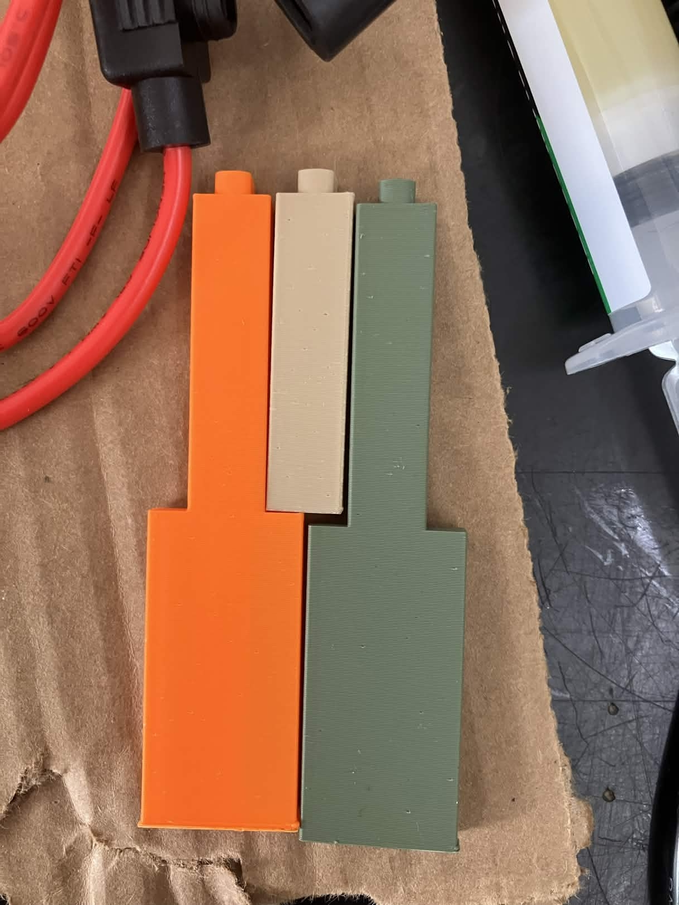
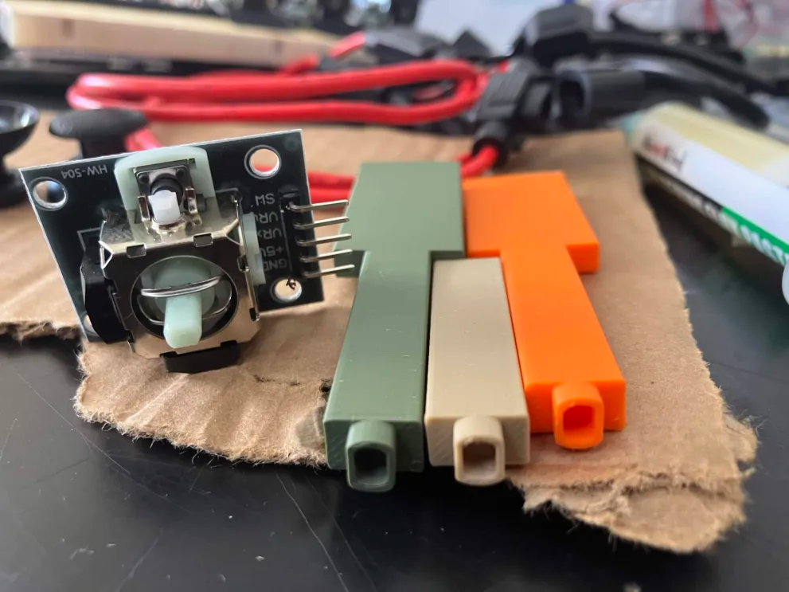
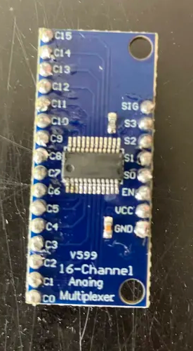

Over the break I 3D printed some piano keys!
They fit onto the connectors of the joysticks, though they're not quite a press-fit,
and will
definitely need glue.


There's also another orange key (which was the first one I made) with the connecters rotated
90 degrees compared to the others. I realized that they should be mounted the other way so that the wires coming off
the joystick don't go sideways into the other keys. (you can also see that the green key has a very slightly larger
connector than the other two; it was the second key I made)
Weston soldered this MUX board, which (should) allow us to read 16 analog signals with only
5 digital pins and 1 analog pin! It works by rerouting the 16 analog signals so only one gets through to the board
at a given time. Each signal can be rapidly switched between using the digital pins, allowing for all of them to be
read within a time frame short enough (a millisecond?) to be practical for input. We sort of got it working...

Something seems to be wrong with the board in some way, be it the soldering or the chip itself, because the values
aren't consistent and there seems to be some cross-talk between channels/pins. Hopefully we can get that fixed soon.